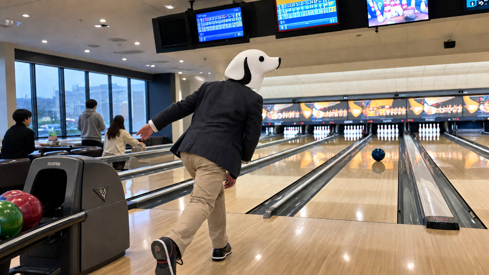

CEO'S NOTE
雨の日に、真ん中へ投げる

こんにちは。TY-Dev Works CEOのT-Yです。
今日は一人でボウリング場に来ています。
東京は朝から雨でした。昼になると気温は20度を下回り、昨日までとはずいぶん空気が違います。
外を歩く気分でもなかったので、屋根のあるところで運動しようと思いました。
その結果がボウリングです。
運動の定義については、今日は議論しないことにします。
受付で靴を借りました。
ボールも選びました。
レーンに表示する名前は「T-Y」です。
参加者は一人です。
画面の名簿が、とても簡潔です。
システム設計としては理想的です。
余計なデータがありません。
問題は、投げる人も一人しかいないことです。
最初の一投。
きれいに右へ曲がって、そのままガターへ入りました。
ボールには迷いがありませんでした。
僕にはありました。
二投目は一応、ピンまで届きました。
一本倒れました。
進捗率10％です。
隣のレーンでは、小さな子どもがガター防止のバンパーを使っています。
少し羨ましくなりました。
大人にも、人生のレーンにあれを付けてほしいものです。
休憩しながらスマートフォンを見ていると、Microsoftが新しいCopilotを発表していました。
新しい構成では「Home」「Code」「Autopilot」が用意され、Officeでの作業、アプリや自動化の作成、そして人がその場にいない間も仕事を続けるエージェントまで、一つの場所へまとめていくそうです。
特に気になったのはAutopilotです。
人間がずっと画面を見ていなくても、与えられた役割と目標に沿って作業を続ける。
こういう仕組みは、これから当たり前になっていくのだと思います。
ただし、任せることと、放っておくことは同じではありません。
何をしてよいのか。
どこまで進んでよいのか。
何をしたのか後から確認できるのか。
便利になるほど、このあたりの設計が大切になります。
MicrosoftもAutopilotについて、権限や監査、ガバナンスを備えた仕組みとして説明しています。
AIが賢くなること以上に、安心して任せられる形にすることが重要なのだと思います。
そこで僕も、少しだけ仕事を自動化してみることにしました。
自分の番を残したまま、飲み物を買いに行きました。
戻ってきました。
当然ですが、ボウリングは何も進んでいませんでした。
画面には僕の名前が表示されたままです。
Autopilotは搭載されていません。
むしろ安心しました。
勝手に投げられてストライクを取られたら、CEOとして立場がありません。
後半になると、少しずつ真ん中へ投げられるようになりました。
フォームを変えたというより、余計なことをしなくなっただけです。
狙う。投げる。結果を見る。直す。
かなり単純です。
でも、開発も結局はこれを何度も繰り返しています。
新しい技術を使っても、最後は小さく試して、結果を見て、直す。
派手ではありません。
ただ、真ん中へ近づく方法としては悪くありません。
最後のフレーム。
ボールはかなりいいところへ入りました。
九本倒れました。
一本だけ残りました。
今日一番の投球です。
そして今日一番、仕事っぽい光景でもありました。
ほぼ終わったと思ったところに、最後の一件が残っています。
ソフトウェア開発では、だいたいそこからが長いです。
今日はその一本を残したまま帰ります。
ボウリング場では許されます。
仕事では、明日もう一度確認します。
それでは、また。
Simple Software. A Better Tomorrow.
TY-Dev Works CEO
T-Y 🐕